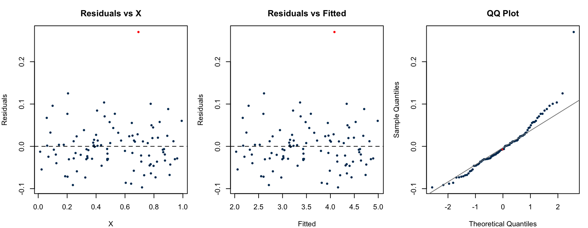
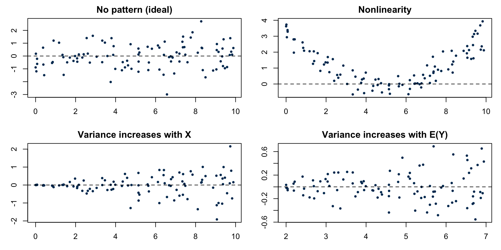
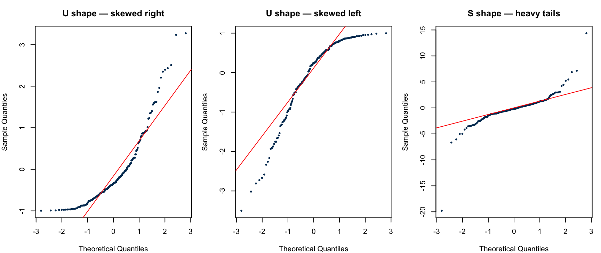
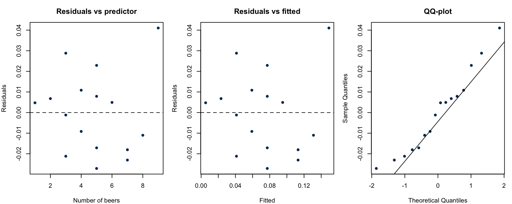
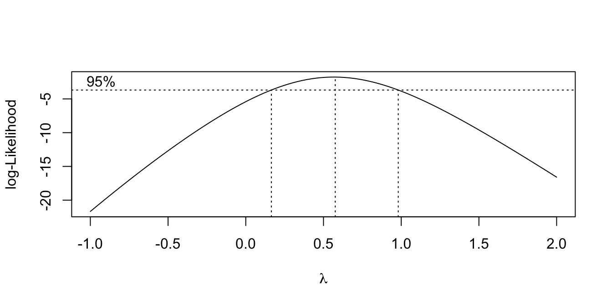
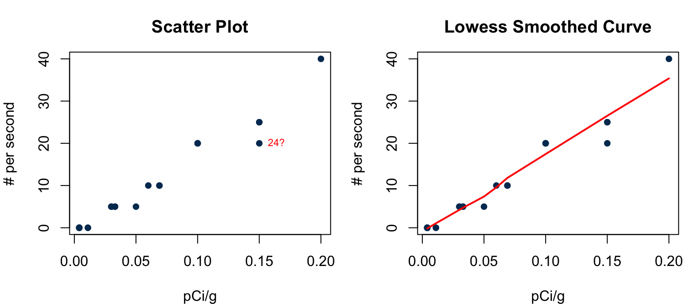
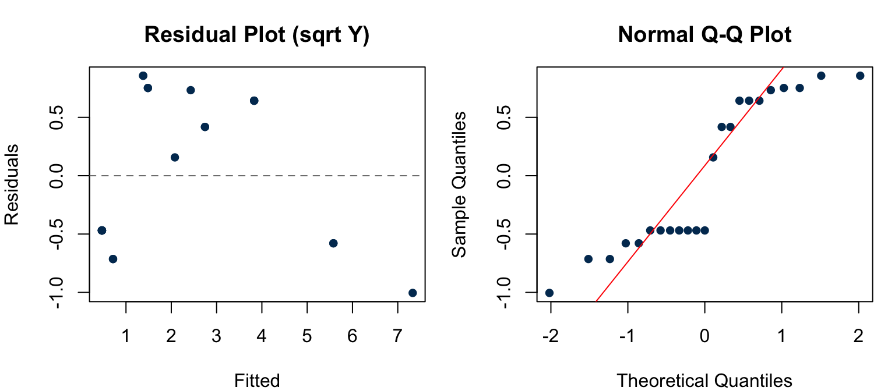

Lecture 8: Model Diagnostics and Remedial Measures
PSTAT 126: Linear Regression
Annie Adams
UC Santa Barbara
2026-10-21
Learning Objectives
By the end of today you will be able to:
- Explain why model diagnostics are necessary before performing inference
- Identify the four key assumptions of simple linear regression and which residual plot checks each
- Read and interpret residual-vs-fitted and QQ-plots to detect assumption violations
- Apply the F test for lack of fit using the SSPE/SSLF decomposition
- Describe remedial measures for nonlinearity, nonconstant variance, and non-independence
- Use Box-Cox to select an appropriate power transformation of \(Y\)
- Walk through a complete diagnostics-and-remediation workflow on real data
Where We Left Off
In Lectures 5–7, we:
- Derived the sampling distributions of \(\widehat{\beta}_0\), \(\widehat{\beta}_1\) under the normality assumption
- Built confidence intervals and hypothesis tests for the parameters
- Partitioned variation into SSR + SSE and introduced the F-test for \(H_0: \beta_1 = 0\)
- Constructed CIs for mean response and prediction intervals for new observations
All of that inference is only valid if the model assumptions hold.
Today we ask: how do we check them? And if they fail, what do we do?
Diagnostics
The Need for Diagnostics
After fitting a regression model it is important to determine whether all the necessary model assumptions are valid before performing inference.
If there are any violations, subsequent inferential procedures may lead to faulty conclusions.
Therefore, it is crucial to perform appropriate model diagnostics.
We also want to check for:
- Outliers — points far from the fitted model
- Influential observations — points that disproportionately affect the fit
- Omitted predictors — important variables left out of the model
The Four Assumptions
The linear regression model \(Y_i = \beta_0 + \beta_1 X_i + \varepsilon_i\) assumes \(\varepsilon_i \overset{iid}{\sim} N(0, \sigma^2)\).
This single statement encodes four assumptions (in order of importance):
| # | Assumption | What it means |
|---|---|---|
| 1 | Linearity | \(E(Y) = \beta_0 + \beta_1 X\) |
| 2 | Independence | Responses \(Y_i\) are independent of each other |
| 3 | Equal variance | \(\mathrm{Var}(\varepsilon_i) = \sigma^2\) for all \(i\) |
| 4 | Normality | Errors \(\varepsilon_i\) follow a normal distribution |
Usually we are not certain in advance whether these hold. We need to check them before performing inference or prediction.
Residuals as Diagnostic Tools
Recall the residuals \(e_i = Y_i - \widehat{Y}_i\).
\(e_i\) can be regarded as the observed error of \(\varepsilon_i\).
Since several assumptions concern \(\varepsilon_i\) — e.g., \(E(\varepsilon_i) = 0\), independence, equal variance, normality — we use the residuals \(e_i\) to check these assumptions.
Key idea: The residuals are not perfectly i.i.d. (they have \(n - 2\) degrees of freedom and are constrained by \(\sum e_i = 0\)), but for large \(n\) they behave approximately like the true errors, making them useful proxies.
Four Residual Plots
| Plot | Checks | What to look for |
|---|---|---|
| Residuals vs. \(X\) | Assumption 1 (linearity) | A systematic curve or trend indicates nonlinearity |
| Residuals vs. time order | Assumption 2 (independence) | A trend over time indicates correlated errors — only relevant when data have a time order |
| Residuals vs. fitted \(\widehat{Y}\) | Assumption 3 (equal variance) | A fan shape (variance growing with \(\widehat{Y}\)) indicates heteroscedasticity |
| QQ-plot | Assumption 4 (normality) | Systematic deviation from the diagonal indicates non-normality |
Rule of thumb: If assumptions 1 and 3 are checked with the fitted-values plot, the residuals-vs-\(X\) plot is often redundant in SLR (they carry the same information). Both are shown for completeness.
Prototype Residual Plots

Top-left is the ideal pattern — random scatter around zero with no trend and constant spread.
The QQ-Plot (Normal Probability Plot)
If \(\varepsilon_1, \ldots, \varepsilon_n \overset{iid}{\sim} N(0, \sigma^2)\), consider the order statistics \(e_{(1)} \leq e_{(2)} \leq \cdots \leq e_{(n)}\). Then:
\[E(e_{(k)}) \approx \sqrt{\text{MSE}}\; z\!\left(\frac{k - 0.375}{n + 0.25}\right)\]
where \(z(A)\) denotes the \(A \times 100\) percentile of the standard normal distribution.
The QQ-plot shows residuals (vertical axis) versus approximated expected normal quantiles (horizontal axis).
We expect the points to fall reasonably close to a straight line when the errors are close to normal.
QQ-Plots When Not Normal

- U-shaped (skewed right): Points curve above the line in both tails — right-skewed distribution
- U-shaped (skewed left): Points curve below the line — left-skewed distribution
- S-shaped: Points deviate outward at both extremes — heavier tails than normal
Outliers in Residual Plots
An outlier is a point that is far away from the model — it stands out clearly in residual plots and/or the QQ-plot.
How to handle outliers:
- Correct or discard if it is a data-entry error
- Sometimes the outlier itself is of singular interest (a rare event worth studying)
- Do not automatically exclude outliers — try sensitivity analysis and/or robust methods
Beer Data: Diagnostic Plots
Recall: BAC (blood alcohol content) was regressed on number of beers consumed (\(n = 16\)).
beer <- data.frame(
beers = c(5,2,9,8,3,7,3,5,3,5,4,6,5,7,1,4),
bac = c(0.10,0.03,0.19,0.12,0.04,0.095,0.07,0.06,0.02,0.05,0.07,0.10,0.085,0.09,0.01,0.05)
)
fit_beer <- lm(bac ~ beers, data = beer)
par(mfrow = c(1, 3), mar = c(4, 4, 3, 1))
plot(beer$beers, residuals(fit_beer), xlab = "Number of beers", ylab = "Residuals",
main = "Residuals vs predictor", pch = 16, col = "#003660"); abline(h = 0, lty = 2)
plot(fitted(fit_beer), residuals(fit_beer), xlab = "Fitted", ylab = "Residuals",
main = "Residuals vs fitted", pch = 16, col = "#003660"); abline(h = 0, lty = 2)
qqnorm(residuals(fit_beer), main = "QQ-plot", pch = 16, col = "#003660"); qqline(residuals(fit_beer))
The residuals show no strong pattern — random scatter, roughly constant spread, and points close to the QQ line. The linearity and normality assumptions appear reasonably satisfied here.
Practice: Reading Residual Plots
Below are three residual-vs-fitted plots. For each, state which assumption is violated (if any) and what you would do next.

(a) Which plot suggests a violation of the equal-variance assumption? What transformation might help?
(b) Which plot suggests a violation of the linearity assumption? What would you try?
(c) Which plot looks ideal?
Practice: Reading Residual Plots — Solution
(a) Plot A — the spread of residuals increases with the fitted value (fan shape), violating equal variance (Assumption 3). A log or square-root transformation of \(Y\) may stabilize the variance.
(b) Plot B — a curved trend remains in the residuals after fitting a line, violating linearity (Assumption 1). Consider adding a quadratic term or transforming \(X\).
(c) Plot C — random scatter around zero with no trend and roughly constant spread. This is the ideal pattern — no obvious violations.
F Test for Lack of Fit
Testing Linearity Formally
The residual plots give us a visual check on Assumption 1. But can we test whether the linear relationship fits adequately?
Yes — when there are replicated observations (multiple \(Y\) values at the same \(X\) value), we can use an F test for lack of fit.
The idea: compare the fit of - a full model that allows any mean function (one-way ANOVA) - a restricted model that imposes the linear relationship \(E(Y) = \beta_0 + \beta_1 X\)
Extra Sum of Squares Principle
The general framework for comparing nested models:
- Fit the full model \(\rightarrow\) error sum of squares \(SSE(F)\)
- Fit the restricted model \(\rightarrow\) error sum of squares \(SSE(R)\)
- \(SSE(R) \geq SSE(F)\) always — the full model always fits at least as well
The extra sum of squares \(SSE(R) - SSE(F)\) measures the additional error incurred by the restriction. It should be small when \(H_0\) is true.
The F statistic: \[F^* = \frac{[SSE(R) - SSE(F)] / (df_R - df_F)}{SSE(F)/df_F} \overset{H_0}{\sim} F_{df_R - df_F,\; df_F}\]
Reject \(H_0\) if \(F^* > F(1-\alpha;\; df_R - df_F,\; df_F)\)
Setup: Replicated Observations
Denote \(X_1, \ldots, X_c\) as the \(c\) distinct observed values of \(X\).
- \(j\) indexes each distinct \(X\) value (\(j = 1, \ldots, c\))
- \(i\) indexes the replicates for a given \(X_j\) (\(i = 1, \ldots, n_j\))
- \(n_j\) = number of \(Y\) values at \(X_j\)
The full dataset:
\[n_1 \text{ replicates at } X_1: Y_{11}, \ldots, Y_{n_1 1}\] \[n_2 \text{ replicates at } X_2: Y_{12}, \ldots, Y_{n_2 2}\] \[\vdots\] \[n_c \text{ replicates at } X_c: Y_{1c}, \ldots, Y_{n_c c}\]
Total observations: \(n = \sum_{j=1}^c n_j\)
Full Model and Pure Error SS
Full model (one-way ANOVA — no linearity assumption):
\[Y_{ij} = \mu_j + \varepsilon_{ij}, \quad j = 1, \ldots, c;\; i = 1, \ldots, n_j, \quad \varepsilon_{ij} \overset{iid}{\sim} N(0, \sigma^2)\]
The LS estimates of \(\mu_j\) are the group means \(\bar{Y}_j = \sum_{i=1}^{n_j} Y_{ij}/n_j\).
Pure error sum of squares (within-group variation):
\[SSPE = SSE(F) = \sum_{j=1}^c \sum_{i=1}^{n_j} (Y_{ij} - \bar{Y}_j)^2, \qquad df_F = n - c\]
This is pure error because it measures variation around group means — completely free of any linearity assumption.
Restricted Model and Lack of Fit SS
Restricted model (linear regression — imposes linearity):
\[Y_{ij} = \beta_0 + \beta_1 X_j + \varepsilon_{ij}, \qquad df_R = n - 2\]
Let \(\widehat{Y}_{ij} = b_0 + b_1 X_j\) be the fitted values. Then \(SSE(R) = \sum_{j}\sum_i (Y_{ij} - \widehat{Y}_{ij})^2\).
Key decomposition:
\[SSE(R) = SSPE + SSLF\]
where the lack of fit sum of squares is:
\[SSLF = \sum_{j=1}^c \sum_{i=1}^{n_j} (\bar{Y}_j - \widehat{Y}_{ij})^2 = \sum_{j=1}^c n_j(\bar{Y}_j - \widehat{Y}_{ij})^2, \qquad df_{LF} = c - 2\]
SSLF measures how far the group means deviate from the fitted line — it is zero only if the line passes perfectly through every group mean.
The F Test for Lack of Fit
Applying the extra sum of squares principle:
\[F^* = \frac{[SSE(R) - SSE(F)]/(df_R - df_F)}{SSE(F)/df_F} = \frac{SSLF/(c-2)}{SSPE/(n-c)} = \frac{MSLF}{MSPE} \overset{H_0}{\sim} F_{c-2,\; n-c}\]
Decision rule: Reject \(H_0\) (i.e., reject the linear model) if \(F^* > F(1-\alpha;\; c-2,\; n-c)\).
This F test is also called the pure error test.
ANOVA table with lack of fit decomposition:
| Source | df | SS | MS | F |
|---|---|---|---|---|
| Model | 1 | SSR | MSR = SSR/1 | MSR/MSE |
| Error | \(n-2\) | SSE | MSE = SSE/\((n-2)\) | |
| — Lack of fit | \(c-2\) | SSLF | MSLF = SSLF/\((c-2)\) | MSLF/MSPE |
| — Pure error | \(n-c\) | SSPE | MSPE = SSPE/\((n-c)\) | |
| Total | \(n-1\) | SSTO |
Bank Example
12 branches of a commercial bank offered gifts for opening money market accounts. The gift value was proportional to the minimum deposit (\(X\), in dollars). The goal: does minimum deposit predict number of new accounts (\(Y\))?
Data: \(c = 6\) distinct deposit sizes (\(75, 100, 125, 150, 175, 200\)), each with \(n_j = 2\) replicates (\(n = 11\); one branch dropped after a fire).
Analysis of Variance Table
Response: y
Df Sum Sq Mean Sq F value Pr(>F)
factor(x) 5 18735 3747.0 16.32 0.004085 **
Residuals 5 1148 229.6
---
Signif. codes: 0 '***' 0.001 '**' 0.01 '*' 0.05 '.' 0.1 ' ' 1Analysis of Variance Table
Response: y
Df Sum Sq Mean Sq F value Pr(>F)
x 1 5141.3 5141.3 3.1389 0.1102
Residuals 9 14741.6 1638.0 Bank Example: Computing the F Statistic
Analysis of Variance Table
Model 1: y ~ factor(x)
Model 2: y ~ x
Res.Df RSS Df Sum of Sq F Pr(>F)
1 5 1148
2 9 14742 -4 -13594 14.801 0.005594 **
---
Signif. codes: 0 '***' 0.001 '**' 0.01 '*' 0.05 '.' 0.1 ' ' 1- \(SSE(F) = SSPE = 1148\), \(\; df_F = n - c = 11 - 6 = 5\)
- \(SSE(R) = 14741.6\), \(\; df_R = n - 2 = 9\)
- \(SSLF = 14741.6 - 1148 = 13593.6\), \(\; df_{LF} = c - 2 = 4\)
\[F^* = \frac{13593.6/4}{1148/5} = \frac{3398.4}{229.6} = 14.8\]
With \(p = 0.006\), we reject the linear model at \(\alpha = 0.05\). The linear function does not adequately describe the relationship between deposit size and new accounts.
Practice: Lack of Fit Test
An experiment has \(c = 4\) distinct \(X\) values with \(n_2 = 3\) replicates each (\(n = 12\)). After fitting the linear regression and the full ANOVA model:
- \(SSE(R) = 480.2\) (linear model)
- \(SSE(F) = SSPE = 120.4\) (pure error)
(a) Compute \(SSLF\) and its degrees of freedom.
(b) Compute \(MSLF\) and \(MSPE\).
(c) Compute \(F^*\) and state whether you reject the linear model at \(\alpha = 0.05\). Critical value: \(F(0.95;\; 2,\; 8) = 4.46\).
(d) What does this result tell you about Assumption 1?
Practice: Lack of Fit Test — Solution
(a) \(SSLF = SSE(R) - SSE(F) = 480.2 - 120.4 = 359.8\)
\(df_{LF} = c - 2 = 4 - 2 = 2\); \(\quad df_{PE} = n - c = 12 - 4 = 8\)
(b) \[MSLF = \frac{359.8}{2} = 179.9 \qquad MSPE = \frac{120.4}{8} = 15.05\]
(c) \[F^* = \frac{MSLF}{MSPE} = \frac{179.9}{15.05} = 11.95\]
Since \(11.95 > 4.46\), we reject the linear model at \(\alpha = 0.05\).
(d) There is statistically significant evidence that the linear function does not adequately fit the data — Assumption 1 (linearity) appears to be violated. We should consider a transformation or a more flexible model.
Remedial Measures
What to Do When Assumptions Fail
When the linear regression model is not appropriate, there are two general approaches:
1. Develop a more appropriate model
- Polynomial regression: \(E(Y) = \beta_0 + \beta_1 X + \beta_2 X^2\)
- Nonlinear regression: \(E(Y) = \beta_0 \beta_1^X\)
- Nonparametric regression: \(E(Y) = f(X)\) where \(f\) is estimated from data
- These can be more flexible but also more complex
2. Transformation
- Transform \(X\), \(Y\), or both to make the linear model more appropriate
- Usually relatively simple — keeps the familiar OLS framework
- Common transformations: \(\sqrt{\cdot}\), \(\log(\cdot)\), \(\exp(\cdot)\), \(1/(\cdot)\)
Remedies by Assumption
| Violated assumption | Remedy |
|---|---|
| Linearity | Transform \(X\) or \(Y\); add polynomial terms; use nonlinear/nonparametric model |
| Independence | Correlated-error models (time series, mixed models) — not covered in this course |
| Equal variance | Weighted least squares; variance-stabilizing transformation of \(Y\) |
| Normality | Variance-stabilizing transformation of \(Y\) often helps both at once |
On outliers:
- Investigate the cause before deciding what to do
- If a data-entry error: correct or remove
- If a real data point: do not remove automatically; run the analysis with and without the outlier (sensitivity analysis) or use robust regression
Transformations
When and How to Transform
We can transform \(X\) and/or \(Y\) and hope that the linear regression model is adequate for the transformed variables.
Transformations of \(X\) — address nonlinearity while leaving error variance roughly unchanged:
| Shape of relationship | Try |
|---|---|
| Concave up (fast growth) | \(X' = X^2\) or \(X' = e^X\) |
| Concave down (diminishing returns) | \(X' = \log(X)\) or \(X' = \sqrt{X}\) |
| Decreasing, convex | \(X' = 1/X\) or \(X' = e^{-X}\) |
Transformations of \(Y\) — address nonconstant variance and/or nonnormality:
\[Y' = \sqrt{Y}, \qquad Y' = \log_{10}(Y), \qquad Y' = 1/Y\]
These are called variance-stabilizing transformations.
Box-Cox: Choosing the Transformation of \(Y\)
It is often difficult to determine which transformation is most appropriate from diagnostic plots alone. The Box-Cox method selects a power transformation data-adaptively.
Suppose \(Y > 0\). Consider the family:
\[Y(\lambda) = \begin{cases} \dfrac{Y^\lambda - 1}{\lambda} & \lambda \neq 0 \\ \log Y & \lambda = 0 \end{cases}\]
where \(\lambda\) is treated as a parameter to be estimated.
We hope that \(Y(\lambda)\) satisfies:
- \(E(Y(\lambda)) = \beta_0 + \beta_1 X\)
- \(\mathrm{Var}(Y(\lambda)) = \sigma^2\) (constant)
- \(Y(\lambda)\) is approximately normal
Box-Cox: Estimating \(\lambda\)
Treating \(Y(\lambda) \overset{\text{approx}}{\sim} N(\beta_0 + \beta_1 X, \sigma^2)\), the profiled log-likelihood (after maximizing over \(\beta_0, \beta_1, \sigma^2\) for fixed \(\lambda\)) is:
\[\ell_p(\lambda) = -\frac{n}{2}\log\!\left\{\frac{SSE(\lambda)}{n}\right\} + (\lambda - 1)\sum_{i=1}^n \log Y_i\]
where \(SSE(\lambda)\) is the residual sum of squares after fitting \(Y(\lambda) = \beta_0 + \beta_1 X\).
The MLE of \(\lambda\) is the value that maximizes \(\ell_p(\lambda)\).
In practice:
- Plot \(\ell_p(\lambda)\) vs \(\lambda\) and find the peak
- An approximate \(100(1-\alpha)\%\) confidence region for \(\lambda\): \(\{\lambda : \ell_p(\hat\lambda) - \ell_p(\lambda) \leq \frac{1}{2}\chi^2_1(1-\alpha)\}\)
- Round \(\hat\lambda\) to a nearby interpretable value (e.g., \(0.5 \to \sqrt{Y}\), \(0 \to \log Y\), \(-1 \to 1/Y\))
Box-Cox in R

The peak is near \(\hat\lambda \approx 0.5\), suggesting a square-root transformation \(Y' = \sqrt{Y}\). The 95% confidence region includes \(\lambda = 1\) (no transformation), so for the beer data the linear model on the original scale may still be acceptable — consistent with the clean residual plots we saw earlier.
Case Example: Plutonium Measurement
Plutonium Data
Goal: Estimate the regression relationship between alpha counts per second (\(Y\), #/sec) and plutonium activity (\(X\), pCi/g).
Data: \(n = 24\) observations. Let’s load and explore:
plutonium <- data.frame(
x = c(0.150, 0.004, 0.069, 0.030, 0.011, 0.004, 0.050, 0.033, 0.060, 0.100,
0.200, 0.150, 0.004, 0.100, 0.069, 0.011, 0.150, 0.100, 0.033, 0.004,
0.004, 0.004, 0.030, 0.004),
y = c(20, 0, 10, 5, 0, 0, 5, 5, 10, 20,
40, 25, 0, 20, 10, 0, 25, 20, 5, 0,
0, 0, 5, 0)
)
head(plutonium) x y
1 0.150 20
2 0.004 0
3 0.069 10
4 0.030 5
5 0.011 0
6 0.004 0Exploratory Plots
par(mfrow = c(1, 2), mar = c(4, 4, 3, 1))
plot(plutonium$x, plutonium$y, xlab = "pCi/g", ylab = "# per second",
main = "Scatter Plot", pch = 16, col = "#003660")
text(0.150, 20, "24?", pos = 4, cex = 0.7, col = "red")
# Lowess smoothed curve
plot(plutonium$x, plutonium$y, xlab = "pCi/g", ylab = "# per second",
main = "Lowess Smoothed Curve", pch = 16, col = "#003660")
lines(lowess(plutonium$x, plutonium$y), col = "red", lwd = 2)
Case 24 (observation 1 in 1-indexed format shown) was caused by an unusual lab condition and will be discarded before fitting.
Fit the Linear Model (fit1)
Call:
lm(formula = y ~ x, data = plut)
Residuals:
Min 1Q Median 3Q Max
-3.2932 -0.7796 0.5599 0.5690 2.8084
Coefficients:
Estimate Std. Error t value Pr(>|t|)
(Intercept) -1.3396 0.4756 -2.817 0.0103 *
x 192.6557 6.2091 31.028 <2e-16 ***
---
Signif. codes: 0 '***' 0.001 '**' 0.01 '*' 0.05 '.' 0.1 ' ' 1
Residual standard error: 1.641 on 21 degrees of freedom
Multiple R-squared: 0.9787, Adjusted R-squared: 0.9776
F-statistic: 962.7 on 1 and 21 DF, p-value: < 2.2e-16Diagnostic Plots for fit1
par(mfrow = c(1, 2), mar = c(4, 4, 3, 1))
plot(fitted(fit1), residuals(fit1), xlab = "Fitted", ylab = "Residuals",
main = "Residual Plot", pch = 16, col = "#003660")
abline(h = 0, lty = 2, col = "gray50")
qqnorm(residuals(fit1), main = "Normal Q-Q Plot", pch = 16, col = "#003660")
qqline(residuals(fit1), col = "red")
The residual plot shows a clear fan shape — variance increases with fitted value. This is a nonconstant variance violation. The Box-Cox method can help us choose a stabilizing transformation.
Box-Cox Transformation for Plutonium Data

The Box-Cox plot peaks near \(\hat\lambda \approx 0.5\), suggesting a square root transformation: \(Y' = \sqrt{Y}\).
Fit the Transformed Model (fit2)
Call:
lm(formula = yp ~ x, data = plut)
Residuals:
Min 1Q Median 3Q Max
-1.005 -0.469 -0.469 0.643 0.857
Coefficients:
Estimate Std. Error t value Pr(>|t|)
(Intercept) 0.3290 0.1897 1.734 0.0975 .
x 35.0012 2.4765 14.133 3.37e-12 ***
---
Signif. codes: 0 '***' 0.001 '**' 0.01 '*' 0.05 '.' 0.1 ' ' 1
Residual standard error: 0.6544 on 21 degrees of freedom
Multiple R-squared: 0.9049, Adjusted R-squared: 0.9003
F-statistic: 199.7 on 1 and 21 DF, p-value: 3.372e-12Diagnostic Plots for fit2
par(mfrow = c(1, 2), mar = c(4, 4, 3, 1))
plot(fitted(fit2), residuals(fit2), xlab = "Fitted", ylab = "Residuals",
main = "Residual Plot (sqrt Y)", pch = 16, col = "#003660")
abline(h = 0, lty = 2, col = "gray50")
qqnorm(residuals(fit2), main = "Normal Q-Q Plot", pch = 16, col = "#003660")
qqline(residuals(fit2), col = "red")
The fan shape is largely gone, but a slight nonlinear pattern remains. This suggests the relationship between \(X\) and \(\sqrt{Y}\) may not be perfectly linear — a further transformation of \(X\) or a polynomial term could be explored in practice.
Comparing fit1 and fit2
| fit1 (original \(Y\)) | fit2 (\(Y' = \sqrt{Y}\)) | |
|---|---|---|
| Slope | \(\widehat{\beta}_1 = 0.00554\) | \(\widehat{\beta}_1 = 0.01336\) |
| \(R^2\) | 0.916 | 0.900 |
| Residual SE | 0.01257 | 0.0334 |
| Equal variance? | Violated (fan shape) | Much better |
| Normality? | Borderline | Better |
Take-away: The transformation improved the diagnostic picture substantially. The slight remaining nonlinearity is worth noting but may be acceptable for practical purposes.
When reporting results from fit2, all inference is about \(\sqrt{Y}\), not \(Y\) directly. Predictions must be squared back: \(\widehat{Y} = (\widehat{Y}')^2\).
Practice: Full Workflow
A researcher regresses pollution level \(Y\) (ppb) on distance from factory \(X\) (km) using \(n = 40\) observations.
- The residual-vs-fitted plot shows a clear decreasing fan (large residuals at small fitted values, small residuals at large fitted values)
- The QQ-plot shows a strong right-skew (points curve above the line)
- The lack of fit F test gives \(F^* = 1.2\), \(p = 0.35\)
(a) Which assumptions appear violated? Which appears satisfied?
(b) What transformation of \(Y\) would you try first, and why?
(c) After a \(\log(Y)\) transformation, the residual-vs-fitted plot looks ideal. Write the fitted model (in terms of \(\log Y\)) and explain how you would predict \(Y\) for a new \(X = 5\) km.
Practice: Full Workflow — Solution
(a)
- Equal variance (Assumption 3): Violated — the fan shape in the residual-vs-fitted plot indicates nonconstant variance.
- Normality (Assumption 4): Violated — right-skew in the QQ-plot.
- Linearity (Assumption 1): Satisfied — the lack of fit test does not reject the linear model (\(p = 0.35\)).
(b) Try \(Y' = \log(Y)\). A log transformation is the natural choice for right-skewed data with a fan-pattern (variance growing with the mean), which often arises when \(Y > 0\) and spans several orders of magnitude.
(c) The fitted model after transformation: \(\widehat{\log Y} = \widehat{\beta}_0 + \widehat{\beta}_1 X\).
To predict \(Y\) at \(X = 5\): compute \(\widehat{\log Y}^* = \widehat{\beta}_0 + 5\widehat{\beta}_1\), then back-transform: \(\widehat{Y}^* = e^{\widehat{\log Y}^*}\).
Summary
- Diagnostics: Check all four assumptions (linearity, independence, equal variance, normality) using residual-vs-predictor, residual-vs-fitted, residual-vs-time, and QQ-plots before performing inference
- Outliers: Investigate first — don’t automatically remove; try sensitivity analysis
- F test for lack of fit: When replicates exist, formally test \(H_0:\) linearity holds using \(F^* = MSLF/MSPE \sim F_{c-2,\; n-c}\); the decomposition is \(SSE(R) = SSPE + SSLF\)
- Remedial measures: Two options — develop a better model, or use a transformation
- Transformations of \(X\): Fix nonlinearity (e.g., \(\log X\), \(X^2\))
- Transformations of \(Y\): Fix nonconstant variance and nonnormality (e.g., \(\sqrt{Y}\), \(\log Y\))
- Box-Cox: Estimates the optimal power \(\lambda\) for \(Y\); round to a nearby interpretable value
- After transforming: Re-check diagnostics; back-transform predictions to the original scale
Questions?
PSTAT 126 — Fall 2026 · UC Santa Barbara